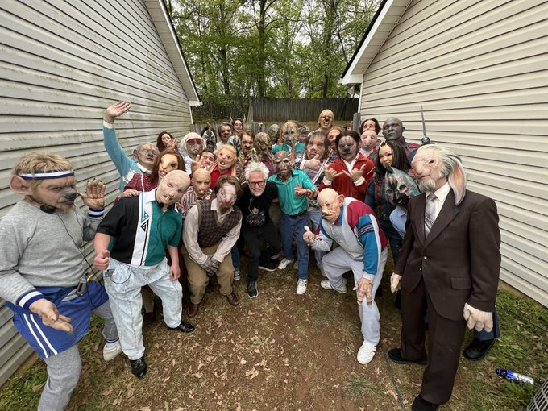
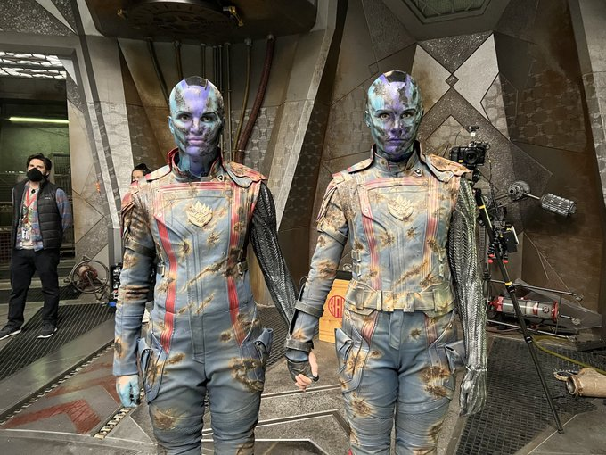
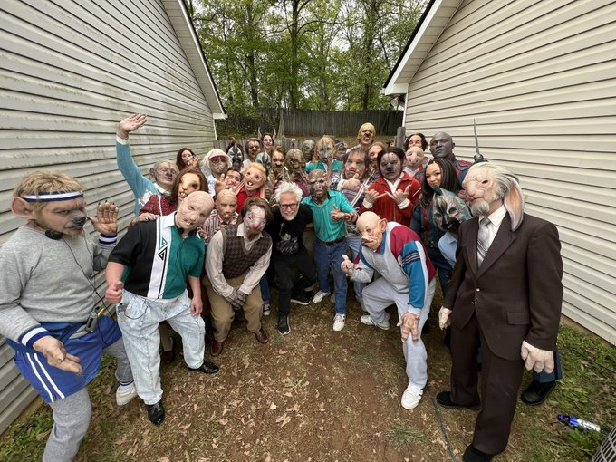
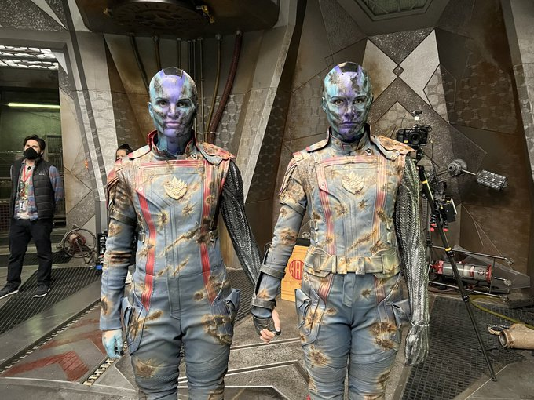

James Gunn
| 직업 | 영화감독, 영화배우 |
| 출생지 | 세인트 루이스 |
| 성별 | 남성 |
| 신체 | 183cm |
| 데뷔 | 1996년 '트로미오와 줄리엣' |
| 수상 | 2007 SF&호러영화 아카데미 |
| 경력 | DC 스튜디오 회장 |
About James
B급 영화감독으로서 각본과 유머, 영상미, 톤과 매너까지 모두 소화하는 올라운드 플레이어형 감독이다. 폭력성이 강한 작품 성향에 비해 휴머니즘이 도드라지는 점이 큰 특징이며, 의외로 감동적인 장면이 많다. 가디언즈 오브 갤럭시 시리즈는 물론, 청불에 상당히 잔인하고, 등장인물이 가차없이 죽는 더 수어사이드 스쿼드에서도 결말에서의 휴머니즘이 더욱 증가 되는데, 동기있는 서사, 컬러풀하고 아름다운 영상미가 감동을 살린다는 평이 많다. 또한 매 장면마다 장면에 딱 맞아떨어지는 노래를 넣는 탁월한 선곡 감각으로도 유명하다. 이는 올드 팝송을 제대로 활용한 가디언즈 오브 갤럭시가 대표적이다.음악 자체가 그 장면에 틀어져 있는 것과 같은 절묘함과 그 분위기를 감싸는 에너지 같은 것들이 강하다.
제임스 건 감독은 트위터 중독?
제임스 건 감독은 평상시에 트위터로 영화에 관련된 정보들을 실시간으로 자주 올리는 감독으로 유명하다. 그의 트위터에서 비하인드 씬과 영화와 관련된 재밌는 정보들을 알 수 있다.

 


